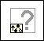

Call Parent Class Method Node
Owning Palette: Cluster, Class, & Variant VIs and Functions
Requires: Base Development System
Calls the nearest ancestor implementation of a class method. You can use the Call Parent Class Method node only on the block diagram of a member VI that belongs to a class that inherits member VIs from an ancestor class. The child member VI must be a dynamic dispatching member VI and have the same name as the ancestor member VI. You cannot use this node to invoke methods from ancestor interfaces.

 Add to the block diagram Add to the block diagram |
 Find on the palette Find on the palette |
The parameters, or input and output terminals, of this node depend on the ancestor member VI and change to match the ancestor member VI exactly. This node adopts the VI icon of the ancestor member VI with a glyph in the bottom, left corner of the subVI to indicate the subVI is calling the ancestor member VI instead of dynamically dispatching as a dynamic subVI node does typically.